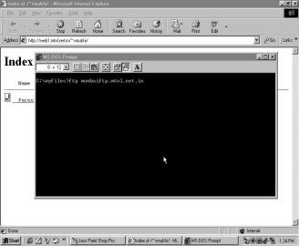
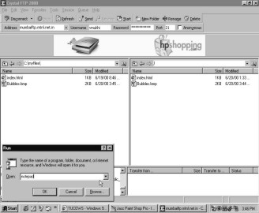
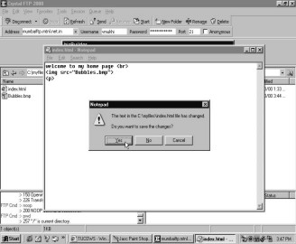

CHAPTER NINE
File Transfer Protocol
All the chapters in this book
talk about the latest technologies and breakthroughs in the ever advancing
world of the Internet. Well, now instead, let’s turn the hands of the clock and
go back in time. File Transfer Protocol or FTP is an old player in the field of
the Internet. Unlike HTTP or Hyper Text Transfer Protocol, which is referred to
as the World Wide Web, FTP is synonymous for transferring files without viewing
them. FTP comes into play when some software is to be downloaded or some binary
executable is to be transferred from a remote computer to another computer.
There are servers whose only job is to store files and transfer them. They may
or may not have HTML files. Under normal circumstances, two separate
directories are assigned to these two jobs. All HTML files are stacked in one
directory and the files that need to be transferred are stored in another
directory. In the past when universities had only one big computer that guarded
all files, each student worked on a dumb terminal and was given some space on
this disk to store his file. These students would log on to the main machine by
entering their user name and password, thus having access to their files on the
disk. When others needed to refer to this file, they would furnish their user
name/password or create a new user name/password and the files could then be
transferred. A large number of times, anonymous log-ins were allowed if the
file was in a public domain. Since this protocol is yet in existence and
heavily used, it is imperative that you learn about it.
MTNL FTP
Any subscriber to the MTNL ISP is provided with some hard disk space on the computer. The user name and password remain similar to the one that is used to dial in and move on to the net. MTNL, on their storage device, gives every user who subscribes to them some MB of space. This space can be used to store HTML /picture files or any other binaries. Now that you can make your own homepages, you can use this space to create your very own site on the symptoms of the mad cows disease. I’m sure you will have many net browsers from France visiting your site! Log on to the MTNL site for Internet services and click on `Quick Reference`. The details and instructions on how to check your Internet usage and on how to upload your web page will appear before you.
|
|
|
|
Screen 9. 1 |
Screen 9. 2 |

|
Screen 9. 3 |
The `Index of /` page is the next to unfurl. It contains a list of the files you have stored on your space. For the moment you have no files on this list. This page looks very similar to the directory listing we’ve seen while designing our own pages in tripod and rediff. So let us create a directory called 'myfiles' (md myfiles) on our local harddisk that will contain all the files that are uploaded on the site. To do so we change to this directory (cd myfiles) and start creating our files that we want to upload.
Go to the Programs menu and from there select the `MS DOS Prompt` program. Agree to create a new file by the name of index.html and type in 'Welcome to my homepage' in your notepad.
|
Screen 9. 4 |
Screen 9. 5 |
Save this message and exit from this window.
|
 |
|
|
Screen 9. 6 |
Screen 9. 7 |
In the black MS DOS Prompt window type in the FTP command,
c:\myfiles>ftp mumbaiftp.mtnl.net.in
Once you supply your password, the same that you use to log on to your MTNL account, you will be welcomed to access your file space at MTNL. You can now upload your data on this space.
|
Screen 9. 8 |
Screen 9. 9 |
Now you need to give the FTP commands to be able to proceed further. Say,
ftp> put index.html
and FTP will set to transferring your files. Exit from the FTP services by giving the command,
ftp>quit
|
|
|
|
Screen 9. 10 |
Screen 9. 11 |
Return to your `Index of` page and click on the `Refresh` button. And like promised, the FTP services have succeeded in uploading your saved message on your MTNL hard disk space.
Crystal FTP
Here you use a FTP client, which is a program that a client uses to transfer files to and fro. This is just to avoid learning the commands that you needed to furnish at the DOS Prompt. Once again, visit the tucows site. Remember your homepage talks of the mad cow disease, so which better site will give you a more reliable software than a member of the same family! Download the software for a Windows95/98 machine. After choosing your region and state conduct a search for FTP software.
|
Screen 9. 12 |
Screen 9. 13 |
From the list that appears, select the 'lucky for some, unlucky for some' number thirteen program. Click on the `Download` button residing besides the name Crystal FTP 2000.
|
Screen 9. 14 |
Screen 9. 15 |
Save this newly downloaded program in your `C` drive. The downloading procedure begins. With GetRight by your side, you need not worry about wrecking your download because of a possible disconnect.
|
Screen 9. 16 |
Screen 9. 17 |
Click on the `Options` button in the download window. From this menu select the `Alternate URL’s` option. Choose a URL from the list and click on the `OK` button.
|
Screen 9. 18 |
Screen 9. 19 |
Go to the Programs menu once again and select `Run`. Open your newly saved file and run it.
|
Screen 9. 20 |
Screen 9. 21 |
Agree to install the Crystal FTP 2000 software on to your computer. A black set up screen will appear.
|
Screen 9. 22 |
Screen 9. 23 |
Acknowledge the red carpet greetings and select the folder in which you would like to set up the program.
|
Screen 9. 24 |
Screen 9. 25 |
Click on the `Install` button to unwind the program on your computer. Finally hit on the `Finish` switch. Your computer is now FTP equipped!
|
Screen 9. 26 |
Screen 9. 27 |
Now when you go to the Programs menu, Crystal FTP 2000 will be waiting for you. Click on it and an `Organize Favourites` window will open.
|
Screen 9. 28 |
Screen 9. 29 |
Select the `New Site` option at the bottom of this window. Fill in the blanks available for the name and address of the site you wish to enter. Plug in your user name and password and click on the `Connect` switch.
|
|
|
|
Screen 9. 30 |
Screen 9. 31 |

You will be transferred to the mumbaiftp.mtnl.net.in site. Nod at the welcoming message and from the list, select `WINDOWS`.
|
Screen 9. 32 |
Screen 9. 33 |
In Windows select the bubbles picture file from the list of files and hit on the `Send` button.
|
Screen 9. 34 |
Screen 9. 35 |
Now go to the parent folder and you will see that giving company to your lonesome index file is the bubbles.bmp file.
|
|
|
|
Screen 9. 36 |
Screen 9. 37 |

Now click on 'myfiles' and then on the bubbles.bmp file. Hit on the `Receive` button and 'myfiles' too will house your picture file.
|
||||
|
Screen 9. 38 |
Screen 9. 39 |
||
|
||||
|
Screen 9. 40 |
Screen 9. 41 |
|
||
Open your 'myfiles'. Your notepad message looms up before you. Close this window.
|
 |
|
|
Screen 9. 42 |
Screen 9. 43 |
In the Run window, open your notepad.
Further open your index.html file. The HTML code for your message and picture awaits you.
|
Screen 9. 44 |
Screen 9. 45 |
Exit from this and save the changes that you have made to this file.
|
 |
|
|
Screen 9. 46 |
Screen 9. 47 |
Select the index.html file from 'myfiles' and click on `Send`. You can either overwrite the file that already exists or then delete it from the right side of the screen.
|
||||
|
Screen 9. 48 |
Screen 9. 49 |
||
|
|
|
|||
|
Screen 9. 50 |
Screen 9. 51 |
|
||

Now send the new index.html file and voila, your message along with the bubbles appears!
|
Screen 9. 52 |
Screen 9. 53 |
Close this window and disconnect from the FTP site.
|
Screen 9. 54 |
Screen 9. 55 |
Ride On
Some more FTP clients
F http://www.rhinosoft.com/RhinoSoft/index.htm